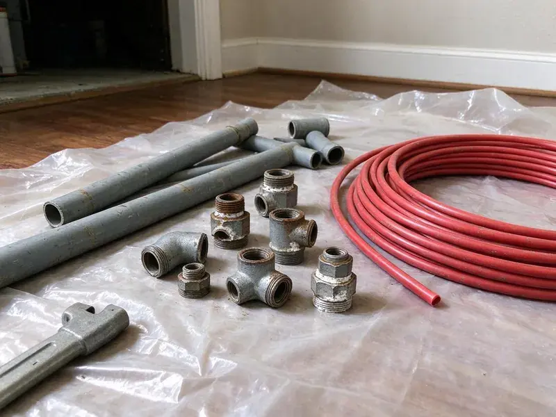

Sump Pump Replacement in Kaiminani, HI
Old pump finally quit in Kaiminani, HI? Our trucks carry the common pump sizes.
- After-Hours Replacement
- High-Water Alarms
- Fill Test Before We Leave
- Upfront Pricing

Sump Pump Installs Done Right in Kaiminani, HI.
Pump cycling every minute? Call HKL Plumbing before it quits.
Replacing Sump Pumps in Kaiminani, HI Homes
A dead sump pump in Kaiminani, HI is a same-week problem at best and a same-hour problem in a storm. You choose the pump type with our help, and we try to have it running before we leave. Most homes need a 1/3 HP unit.
Our expertise includes:
- Battery Backup Systems
- Same-Day Sump Pump Service
- Battery backup and high-water alarm setups

Additional Plumbing Replacement Services in Kaiminani, HI
When repairs are no longer enough, our replacement services in Kaiminani, HI deliver durable upgrades that restore full performance.


Customers
Why Choose HKL Plumbing for Sump Pump Replacement in Kaiminani, HI?
A cheap pump swap can turn into three service calls in a year. We would rather fix the reason the old pump died, whether that is a silted basin or a float that hangs up on the cord. Then the new one lasts.
- Fill Tested, We fill the pit and watch the pump cycle before calling it done.
- Proper Sizing, We match pump capacity to pit volume and how high the water must be lifted.
- Foundation Relief, Pulling groundwater out of the pit relieves pressure on the foundation walls and slab.
Citywide Coverage
Residential basements are most of our sump work, but we also replace pumps in commercial elevator pits and yard drainage basins around Kaiminani. Tight crawl spaces are fine. An outdoor basin gets the same fill test we run indoors.
Experienced Team
Years of pulling failed pumps out of basements and commercial pits teach you where the real problems hide, and it is rarely the motor. More often it is the check valve. Sometimes the discharge line is the culprit.
Safety-First Approach
Water and electricity share that pit, so the cord never lies in standing water and never runs through a doorway or under a rug. Cords get secured clear of the float. No extension cords, ever.
Trusted Certified Kaiminani Plumbing Services Professionals
At HKL Plumbing, we are proud to offer certified plumbing services throughout Kaiminani, HI. Those papers on the wall mean something. Every repair, install and maintenance visit follows strict safety and quality rules, and the plumbers doing the work carry recognized industry credentials.
Call Us Now PHCC Plumbing Contractor Recognition
PHCC Plumbing Contractor Recognition Better Business Bureau (BBB) Accreditation
Better Business Bureau (BBB) Accreditation Angi Certified Pro
Angi Certified Pro ISO 9001 Quality Management Certification
ISO 9001 Quality Management CertificationSump Pump Swaps for Kaiminani, HI Basements
Sump Basin and Pit Replacement in Kaiminani, HI
Old clay tile or 18-inch plastic basins crack and fill with silt, and a pump in a basin that small cycles every few minutes during a heavy rain. We break out the concrete, set a larger poly basin with a sealed lid, and pour the floor back. A bigger basin means longer pump cycles. Fewer starts, longer motor life.

Pedestal Pump Service in Kaiminani, HI
Louder, yes, but a pedestal motor sits high and dry, so in a narrow pit it often outlasts a submersible by several years. Narrow pits favor pedestals. We replace worn units and set the float rod stops for a proper cycle. If your pit is wide enough, a submersible may serve you better.
Cast Iron Submersible Pumps in Kaiminani
Cast iron sheds motor heat into the water around it far better than a plastic housing does, which is a big part of why a Zoeller M53 or Liberty 250 outlasts a hardware-store pump. Figure on an hour or two for a typical swap. Before we set it, we make sure the float can swing freely without catching the wall.
Wayne Sump Pump Swaps in Kaiminani
Wayne makes everything from a thermoplastic quarter-horse pump at the hardware store to cast iron models with vertical switches, and the cheap ones are what we replace most. The usual failure is a burned-out motor or a float that hangs up on the cord. We replace it with the right Wayne or another cast iron unit. Figure on a couple of hours.
Choosing a Backup Battery in Kaiminani
Battery choice decides how long the backup actually runs. Most backups use a sealed AGM or deep-cycle battery around 75 to 100 amp-hours, which covers several hours of on-and-off pumping. We size it to how often your pump runs on a wet day. Plan on a new battery every three to five years.
Pedestal Pumps for Shallow Pits in Kaiminani, HI
Older basements sometimes have a narrow, shallow pit poured right into the floor, and a pedestal pump is often the only thing that fits without breaking concrete. We swap the pump, replace the float rod and stops, and run new 1.5-inch PVC to the check valve. They usually cost less than a submersible.
Zoeller Sump Pump Replacement in Kaiminani, HI
Zoeller cast iron pumps, the M53 and M63 in particular, are what we pull off the truck most often because they take heat and hard cycling better than plastic housings. An existing Zoeller can usually be swapped for a current model with the same 1.5-inch outlet and float style. Need more lift? The M98 steps up to half horsepower.

Backup Pump Options in Kaiminani, HI
Hurricanes reach Hawaii only occasionally, but strong storms can still cause outages, flooding, and damage to outdoor plumbing and water heaters. Outages tend to hit right when the rain is heaviest and the pit is filling fastest. A backup takes over when the main pump quits or loses power. Where water pressure is strong, a water-powered backup runs off the supply line with no battery at all, protected by a backflow preventer. Wells cannot run them.
Sump Pump Replacement Near Me in Kaiminani, HI
Search for a sump pump plumber near you in Kaiminani, HI, and you will find plenty of names, but fewer that stock the pump on the truck. Our vans usually have 1/3 and 1/2 HP cast iron pumps on board. That means a same-day swap in most cases.
Groundwater levels shift with the seasons, and in a wet spring a pit can take on water every few minutes even with no rain in the forecast. Our sizing is based on the wettest week of the year. Not for an average day.
HKL Plumbing at a Glance
- Licensed and insured plumbers serving Kaiminani, HI
- Same-day appointments and 24/7 emergency response
- Upfront, flat-rate pricing before work begins
- 4.8-star rated by 529+ Hawaii customers
Kaiminani Map
Kaiminani Information
- Population
- 12,590
- Area codes
- Local
- Service area
- Kaiminani and towns within a 40 mile drive
- Nearby
- Hilo, Hawaiian Paradise Park, Kihei, Kahului
Some valleys and lowland areas have clay-rich soil that swells with heavy rain and can stress slabs, foundations, and buried pipes. A sump pump that starts on time keeps groundwater pressure off the foundation walls of Kaiminani, HI homes.
Talk to a Plumber
Reach out to HKL Plumbing for honest, reliable plumbing from people who know the trade in Kaiminani, HI.
Our Specialized Plumbing Services in Kaiminani, HI
At HKL Plumbing, we handle the full list of plumbing services across Kaiminani, HI. From leak detection to full system installs, our team works fast and charges fair prices on homes and commercial properties alike. Explore our core services below:


How a Sump Pump Replacement Works in Kaiminani, HI
A few steps, start to finish, and you see the new pump run before we leave.
Call or Book Online
Call (808) 649-6718 or use the online form. Describe what the pump is doing and we will give you a written quote.
Look at the Pit
A licensed plumber checks the pump, pit and discharge line at your Kaiminani home and pins down the failure.
Install the New Pump
We pull the old unit, clean the basin and set the new pump with a fresh check valve, piped to code in Kaiminani.
Frequently Asked Questions About Sump Pump Replacement in Kaiminani
Expect $500 to $1,500 for the pump and labor. A new basin or a long discharge reroute pushes the number up, sometimes by several hundred dollars on its own. We quote it after seeing the pit.
Manufacturer coverage on the pump usually runs 1 to 3 years for plastic models and up to 5 for cast iron. We add our own labor warranty. We go over the terms before you pick a pump.
Plenty of homeowners try it. Setting the pump in the pit is easy, but matching it to the lift and getting the valve and wiring right is where it goes sideways. A licensed plumber gets it right the first time.
Seven to ten years is typical. Idle pumps often die early from a stuck switch.
Budget a morning or an afternoon. The work includes pulling the old pump, cleaning the basin, installing the new pump and check valve, and running a fill test. Basin or discharge work adds time.
One to two hours for a straight swap. Backups and new discharge lines add time.
The primary pump runs on household current and does the daily work. A backup pump, battery or water driven, sits higher in the pit and only runs when the main pump dies, the power drops or the water comes in too fast. Most basements are better off with one.
Usually not, for a straight swap. A permit may come into play when the job adds a new circuit or changes where the discharge line leaves the house. We will tell you during the first visit.
What Our Customers Say About Our Plumbing Experts

Emily R.
The shutoff valve under our kitchen sink snapped off in my hand on a Sunday morning. HKL Plumbing had someone out by early afternoon. He replaced both angle stops with quarter turn valves and showed me where our main shutoff was, which I honestly did not know.
Plumbing Repair · Kahului, HI
Kevin O.
Before buying our house I paid for a sewer camera inspection. HKL Plumbing found a belly in the line that held standing water about forty feet from the cleanout. We used the video to get the sellers to fix it before closing.
Sewer Camera Inspection · Kahului, HI
Tyler J.
We bought a taller comfort height toilet for my dad, who just had knee surgery. The plumber pulled the old one, found the flange was cracked, and replaced it before setting the new bowl. Took about two hours.
Toilet Installation · Lahaina, HI
Laura S.
Our 40 gallon tank started leaking from the bottom after thirteen years. The tech hauled the old one out, set a new unit with a fresh expansion tank, and had hot water running in about four hours. He took the old tank with him too.
Water Heater Replacement · Kaiminani, HICarlos V.
Our house still had galvanized pipe, and upstairs the shower was a trickle. The crew repiped everything in PEX over three days and patched every drywall hole before they left. The pressure difference is night and day.
Repiping · Kaiminani, HI
Angela D.
Our sump pump quit during a storm and the water was an inch from the basement carpet. HKL Plumbing put in a new pump with a battery backup that same evening. We have had two heavy rains since. It kicked on both times.
Sump Pump · Lahaina, HI